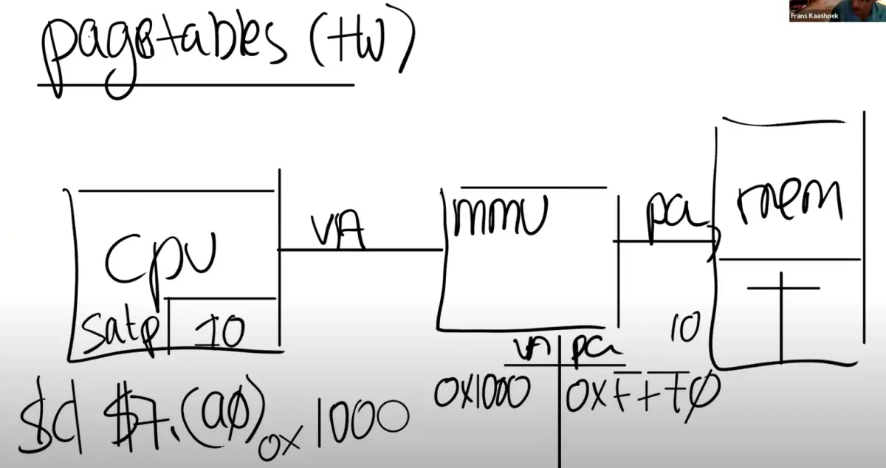
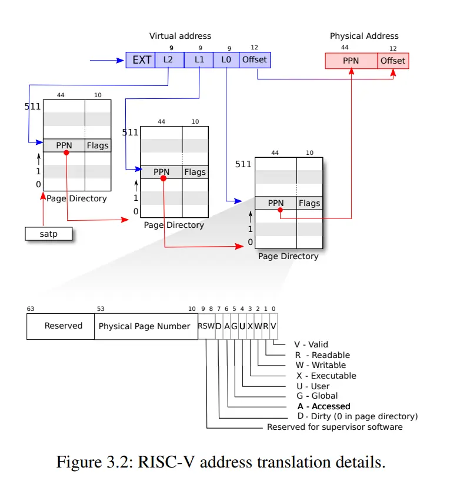
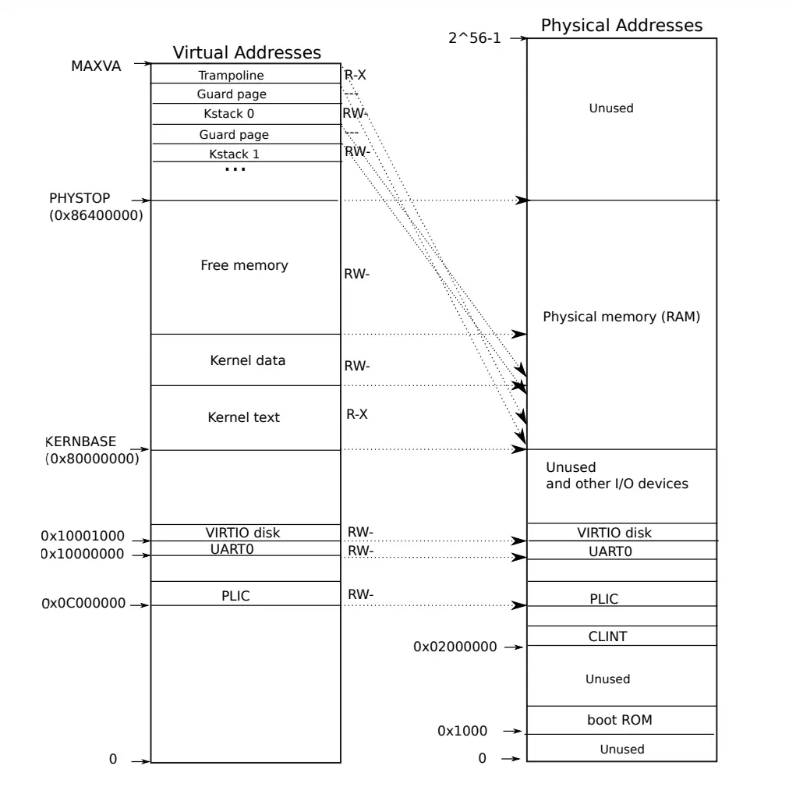
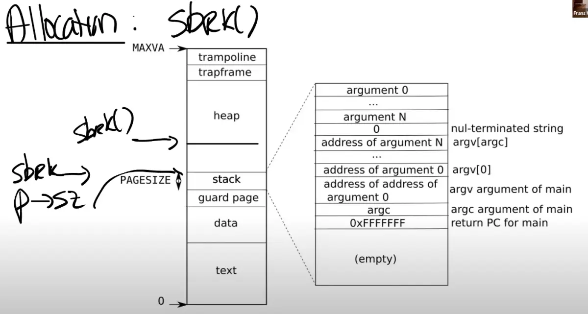
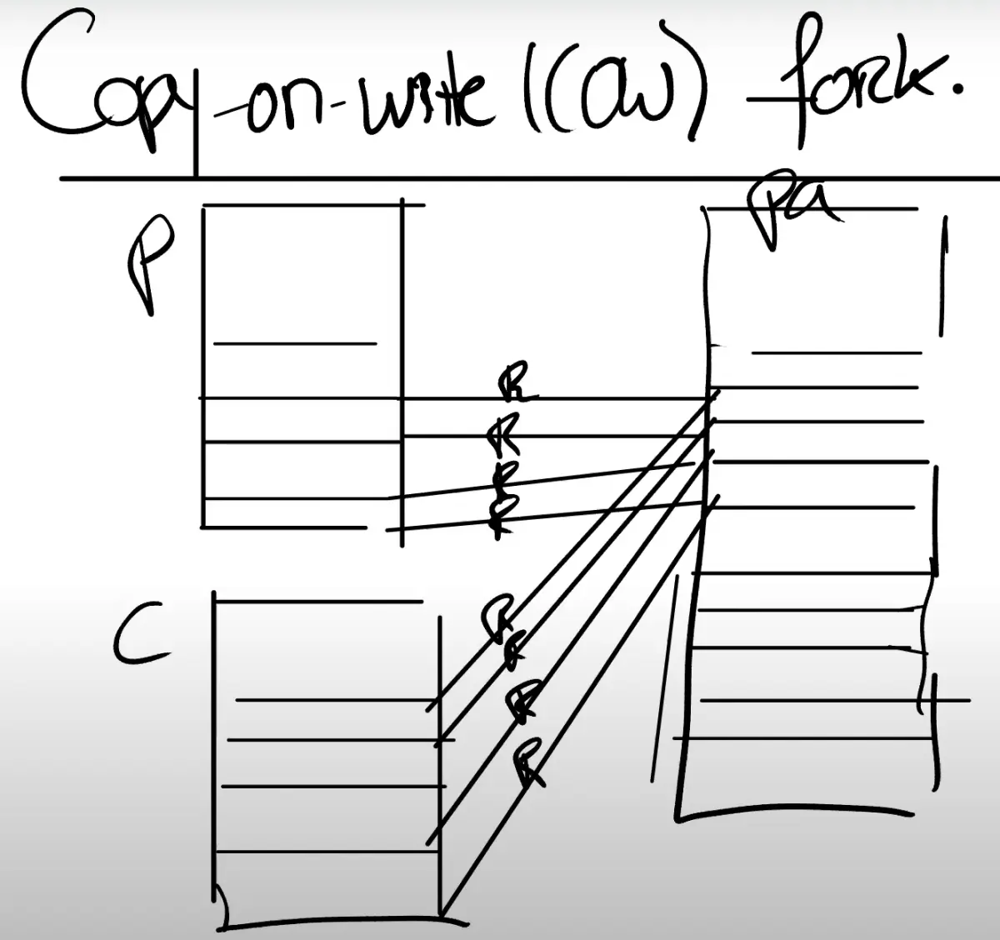

虚拟内存
Table of Contents
为什么需要虚拟内存
假设shell进程由于bug,引发了随机写入某些内存地址，而这些内存地址可能是其他进程使用的 这就可能影响内核或其他进程的执行
所以需要引入 虚拟内存 来实现 隔离的 进程的内存地址空间 ：
- 每个进程拥有自己的内存地址空间，它们能够读写自己的内存，但不能访问其他进程的内存
实现多个地址空间与物理内存之间多路复用的挑战在于如何保持隔离性
页表(page table)
xv6操作系统使用RISC-V架构的 分页硬件 来实现 地址空间 AS 。*页表* 提供了一个 间接层 来处理 地址映射 ：
- CPU 通过 内存管理单元 MMU 映射 到 物理内存 RAM
内核 告诉 MMU 如何将每个 虚拟地址 VA 映射 到 物理地址 PA

为了实现不同的地址空间，需要多个页表并在切换过程中更换页表：
- MMU有一个 satp寄存器 ，用于内核写入以更改页表
- 页表存在于内存中，satp寄存器保存 当前页表的物理地址
- MMU并不会保存page table，它只会从内存中 读取 page table ，然后完成 翻译
页表的大小和结构

- RISC-V映射 4KB 的 页面 ，因此页表只需要为每个页面有一个条目
- RISC-V使用了一个 三级页表 结构来节省空间，通过 索引位 逐级查找 页面表条目 PTE
如果是直接映射，虽然只使用了一个page, 还是需要2^27个PTE（因为有27位用来索引）
这个方案中，只需要3 * 512个PTE（3个9位来索引，512是2^9)，所需的空间大大减少了 这是实际上硬件采用这种层次化的3级page directory结构的主要原因
- 每个PTE有64位，其中只有 54位 被使用，包括 44位 物理页面号 PPN 和 10位 标志位
- PTE中的标志位包括 有效 V 、 可写 W 、 可读 R 、 可执行 X 和 用户 U
- 如果 V位 未设置或 尝试写入 时 W位 未设置，会触发 页错误 PAGE FAULT ，导致控制权转移到内核
TLB
对于一个虚拟内存地址的寻址，需要读三次内存，这里代价有点高
实际中，几乎所有的处理器都会对于最近使用过的虚拟地址的翻译结果有缓存。这个缓存被称为：_Translation Lookside Buffer_ （通常翻译成 页表缓存 ）
当处理器第一次查找一个虚拟地址时，硬件通过3级page table得到最终的PPN，TLB会 保存 虚拟地址 到 物理地址 的 映射关系
这样下一次访问同一个虚拟地址时，处理器可以查看TLB，直接得到物理地址
- 如果 切换 了 page table ，TLB中的缓存将不再有用，它们 *需要被清空*，否则地址翻译可能会出错
- 所以操作系统知道TLB是存在的，要切换page table时，会发送清空TLB的指令， sfence_vma
Kernel Pagetable

右半
图中的右半部分的结构完全由 硬件设计者 决定
如前面看到的一样，当操作系统启动时，会从地址0x80000000开始运行，这个地址其实也是由硬件设计者决定的
主板的设计人员决定了在完成了虚拟到物理地址的翻译之后
- 如果得到的 物理地址 大于 0x80000000 会走向 DRAM芯片
- 如果得到的 物理地址 低于 0x80000000 会走向不同的 I/O设备
- PLIC 中断控制器 Platform-Level Interrupt Controller
- CLINT Core Local Interruptor 也是中断的一部分。多个设备都能产生中断，需要中断控制器来将这些中断路由到合适的处理函数
- UART0 Universal Asynchronous Receiver/Transmitter 负责与Console和显示器交互
- VIRTIO disk，与磁盘进行交互
左半
当机器刚刚启动时，还没有可用的page，XV6操作系统会设置好内核使用的虚拟地址空间，也就是这张图左边的地址分布

实际上在内核空间里，虚拟地址和物理地址是等值映射
Guard Page
有一些page在虚拟内存中的地址很靠后，比如kernel stack在虚拟内存中的地址就很靠后。这是因为在它之下有一个 未被映射 的 Guard page
- 这个Guard page对应的PTE的 Valid 标志位 没有设置
- 如果kernel stack耗尽了，它会溢出到Guard page，但是因为Guard page的PTE中Valid标志位未设置，会导致立即触发page fault，这样的结果好过内存越界之后造成的数据混乱
- 立即触发一个panic（也就是page fault），就 知道 kernel stack出错
- 同时也又不想 浪费 物理内存 给Guard page，所以Guard page不会映射到任何物理内存，它只是占据了虚拟地址空间的一段靠后的地址
权限
- Kernel text page 被标位 R-X ，意味着可以读它，也可以在这个地址段执行指令，但是不能向Kernel text写数据
- Kernel data page 需要能被写入，所以它的标志位是 RW- ，但是不能在这个地址段运行指令，所以它的X标志位未被设置
User page table

用户空间的虚拟地址从0开始
这样做的好处在于可预测性和简化编译器生成代码的工作 编译器可以假设所有地址都是从一个固定的基点开始的，这样可以生成更简洁的机器代码
这些地址是 连续 的，非常适合比如说大数组这样的数据结构
虽然虚拟地址连续，但它们并不需要映射到连续的物理内存上，从而避免了内存碎片问题
- 用户地址空间提供了大量的地址范围以供扩展，这对于 动态增长 的数据结构来说非常有用
跳板页
跳板页 trampoline 是一种特殊的内存页面，它既存在于用户空间的地址映射中，也存在于内核空间的地址映射中，虽然 用户位 U 没有被设置。这样的设置方便了用户空间与内核空间之间的转换：
- 当用户程序需要进行系统调用，即从用户模式切换到内核模式时，通过跳板页可以更加顺畅地进行
因为切换了pagetable之后，理论上同样的VA会用不同的页表找到不同的PA 但是这2块映射是一致的，那么不同的页表，也可以保证代码可以顺畅执行
内核如何使用用户虚拟地址？
当用户程序调用如read()这样的系统调用时，它会将 虚拟地址 传递给 内核 。内核不能直接使用这些用户虚拟地址，因为内核有自己的地址空间。因此，内核必须将这些用户虚拟地址转换为内核空间中的虚拟地址。这一过程：
- 查询当前进程的页表，找到用户虚拟地址对应的物理地址
- 通过内核的页表再将该物理地址映射回内核的虚拟地址
通过这种方式，内核可以安全地访问和操作用户程序传递过来的数据
页表代码
- 内核页表设置在启动时 kvminit() 由内核建立，大部分直接映射，允许内核使用物理地址作为虚拟地址
- 每个进程都有自己的地址空间，内核为每个进程创建独立的页表。
- fork(void) -> uvmcopy(p->pagetable, np->pagetable, p->sz)
- exec() -> pagetable = proc_pagetable(p)
- 用户地址空间的布局从0开始，为编译器生成代码提供了便利
- 内核地址空间的设置：在内核启动时分页还未启用，所以地址是物理地址
- kvmmake() 函数在 vm.c 中 创建 内核的页表
- kvmmap() 函数在构建页表时 添加 PTE
- mappages() 函数在 vm.c 中为一系列 虚拟地址 添加 到相应 物理地址 的映射
- walk() 函数 模拟 了 寻址硬件 找到 一个地址的 PTE 的过程
kvm 作为前缀的函数都是对kernel页表的操作 uvm 作为前缀的函数都是对userspace页表的操作
高级应用
虚拟内存有两个主要的优点
- 隔离性：虚拟内存使得操作系统可以为每个应用程序提供属于它们自己的地址空间。所以一个应用程序不可能有意或者无意的修改另一个应用程序的内存数据
- 抽象性：
- trampoline page，它使得内核可以将一个物理内存page映射到多个用户地址空间中
- guard page，它同时在内核空间和用户空间用来保护Stack
在 page fault时改变页表
通过page fault，内核可以更新page table，这是一个非常强大的功能
什么样的信息对于page fault是必须的?
- 出错的 虚拟内存地址 ，或者是触发page fault的源
出错的 原因 (存在 scause寄存器 中)

- 因为load引起的page fault
- 因为store引起的page fault
- 因为指令执行引起的page fault
引起page fault时的 程序计数器 值 tf->epc 这表明了page fault在用户空间发生的位置
因为在page fault handler中或许想要修复page table，并重新执行对应的指令 理想情况下，修复完page table之后，指令就可以无错误的运行了
Lazy page allocation

在XV6中，sbrk的实现默认是eager allocation。这表示了，一旦调用了sbrk，内核会立即分配应用程序所需要的物理内存
设想自己写了一个应用程序，读取了一些输入然后通过一个矩阵进行一些运算 需要为最坏的情况做准备，比如说为最大可能的矩阵分配内存，但是应用程序可能永远也用不上这些内存 使用虚拟内存和page fault handler，完全可以用某种更聪明的方法来解决这里的问题，这里就是利用lazy allocation
sbrk系统调基本上不做任何事情，唯一需要做的事情就是 提升 p->sz ，之后在某个时间点，应用程序使用到了新申请的那部分内存，这时会 触发 page fault ，因为还没有将新的内存映射到page table。所以，如果解析到一个 大于旧的p->sz，但是又小于新的p->sz （注，也就是旧的p->sz + n）的虚拟地址，希望内核能够分配一个内存page，并且重新执行指令
Zero Fill On Demand
查看一个用户程序的地址空间时，存在text区域，data区域，同时还有一个 bss 区域
注，bss区域包含了未被初始化或者初始化为0的全局或者静态变量
当编译器在生成二进制文件时，编译器会填入这三个区域
- text区域是程序的指令
- data区域存放的是初始化了的全局变量
- BSS包含了未被初始化或者初始化为0的全局变量。
只需要分配一个page，这个page的内容全是0。然后将所有虚拟地址空间的 全0的page 都 map 到 这一个物理page 上

这样至少在程序启动的时候能节省大量的物理内存分配
在 写入 时 复制 页面，并在应用地址空间中映射它为 读/写
Copy On Write
xv6 fork从父进程复制所有页面（参见fork()） 但fork经常紧接着执行exec, 就会直接丢弃那些复制了的页面
解决方案是在 父子进程之间共享地址空间,修改标志位为只读

要写的时候, 复制出来一份,原来的都改成读写

使用PTEs中额外可用的系统位（RSW）
当内核在管理这些page table时，对于copy-on-write相关的page，内核可以设置相应的bit位，这样当发生page fault时，可以发现如果copy-on-write bit位设置了，就可以执行相应的操作了
需要对物理页面进行引用计数
父进程退出时需要更加的小心，因为要判断是否能立即释放相应的物理page。如果有子进程还在使用这些物理page,就不能释放
Demand Paging
程序的二进制文件可能非常的巨大，将它全部从磁盘加载到内存中将会是一个代价很高的操作 又或者data区域的大小远大于常见的场景所需要的大小，并不一定需要将整个二进制都加载到内存中
按需 从文件中加载页面：
- 分配 page table entries，但将它们标记为on-demand
- 在错误时，从文件中读入page并更新pagetable
- 需要保留一些元信息，说明页面在磁盘上的位置
- 这些信息通常在称为 virtual memory area VMA 的结构中
- 如果文件大过物理内存, 把最远使用过的page置换进磁盘. Access bit 在PTE 帮助 kernel 实现 LRU
Memory Mapped Files
将完整或者部分文件加载到内存中，这样就可以通过内存地址相关的load或者store指令来操纵文件。为了支持这个功能，一个现代的操作系统会提供一个叫做 mmap 的 系统调用
void *mmap(void *addr, size_t length, int prot, int flags, int fd, off_t offset);
| Next: 中断陷阱 | Previous: 系统中断 | Home: xv6 解析 |